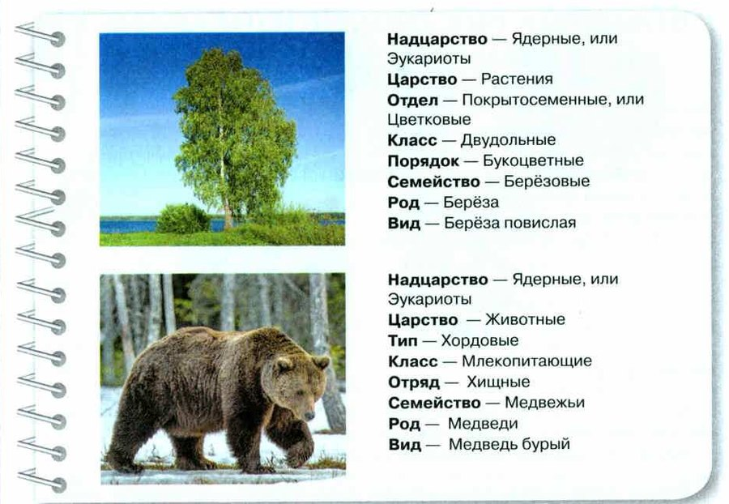
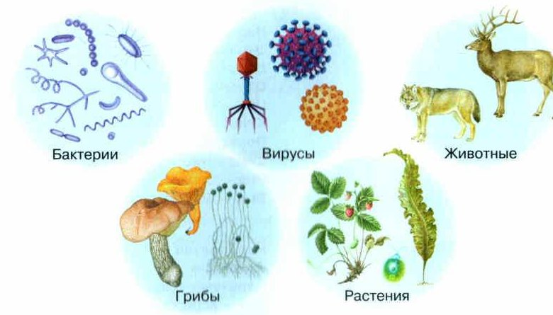

Многообразие организмов и классификация
Сейчас на Земле известно больше 3,5 миллиона видов живых организмов, а учёные думают, что их намного больше. Есть крошечные одноклеточные, которых видно только в микроскоп, и есть многоклеточные великаны.
Живые организмы появились на Земле около 4 миллиардов лет назад. С тех пор они всё время развиваются и меняются, приспосабливаются к условиям жизни. Такое долгое историческое развитие называют эволюцией. Огромное многообразие живого — её результат.
Чтобы разобраться в этом многообразии, учёные объединяют организмы в группы и дают каждой группе название. Это классификация — распределение объектов по группам по их общим признакам. Изучая новый организм, учёный решает: относится ли он к уже известной группе или нет.
Наука о многообразии видов называется систематикой. Её основы заложил шведский учёный Карл Линней (1707—1778). Основной единицей он сделал вид.
На разных языках одни и те же организмы называют по-разному. Поэтому учёные дают им ещё и латинские названия — их понимают во всём мире. Линней придумал двойные названия: первое слово (существительное) — это род, второе (прилагательное) — вид. Воробей полевой — Passer montanus, воробей домовый — Passer domesticus: два вида одного рода.
Многообразие организмов. В настоящее время на нашей планете насчитывается более 3,5 млн видов живых организмов, но многие учёные считают, что их значительно больше. Среди них есть одноклеточные, микроскопические организмы и многоклеточные гиганты.
Возникнув на Земле около 4 млрд лет назад, живые организмы постоянно развиваются, изменяются, приспосабливаясь к условиям жизни в окружающей среде. Их огромное многообразие является результатом приспособления к условиям жизни в процессе продолжительного исторического развития — эволюции.
Классификация организмов. Чтобы разобраться во всём многообразии организмов, учёные объединяют их в группы и присваивают каждой группе название, т. е. классифицируют их. Классификация — распределение тех или иных объектов по группам в зависимости от их общих признаков. В процессе изучения новых объектов в отношении каждого из них исследователь должен сделать вывод: принадлежит ли он к уже установленным классификационным группам или нет.
Науку, изучающую многообразие видов живых организмов, называют систематикой (от греч. систематикос — упорядоченный).
Основы современной систематики заложил шведский учёный Карл Линней (1707—1778). Он использовал вид как основную единицу систематики.
На разных языках одни и те же организмы называют по-разному. Поэтому ввели научные названия организмов на латинском языке, они понятны учёным всего мира. В научных книгах и статьях названия организмов приводятся не только на родном, но и обязательно на латинском языке. Линней дал видам двойные названия: первое слово (существительное) обозначает род, а второе слово (прилагательное) определяет конкретный вид. Например, воробей полевой — Passer montanus и воробей домовый — Passer domesticus — это два вида одного рода. Такое двойное обозначение значительно упростило классификацию.
1. Что такое классификация?
2. Зачем организмам дают латинские названия?
3. Что означают два слова в названии вида?
Принцип родства
Учёные-систематики придумали правила, по которым определяют, какое место занимает организм в системе живой природы — к каким группам он относится. Такие группы называют таксонами.
Современная классификация построена по принципу родства. Учитывают не только то, как организмы похожи снаружи и внутри, но и их происхождение — кто кому родственник.
Каждый организм обязательно входит во все группы по очереди: в вид, в род, в семейство и так дальше до самого верха. У каждой группы свой уровень — ранг.
Принцип родства и его использование в биологических исследованиях. Учёные-систематики разработали правила классификации организмов, с помощью которых определяют их положение в системе живой природы и принадлежность к определённым систематическим группам, или таксонам.
Современные классификации объектов живой природы построены по принципу родства. При классификации учитывается не только сходство внешнего и внутреннего строения, но и происхождение видов, их родство. Принято считать, что любой конкретный объект должен последовательно принадлежать ко всем выделяемым систематическим группам (таксонам), иметь свой определённый ранг.
4. Что учитывают учёные при классификации по принципу родства?
Основные систематические группы
Главная единица систематики — вид. Это группа особей, похожих по строению, жизнедеятельности и образу жизни. Они дают при скрещивании плодовитое потомство и живут на определённой территории.
Название вида — из двух слов: берёза бородавчатая и берёза пушистая, заяц-русак и заяц-беляк, медведь белый и медведь бурый.
Дальше группы вкладываются одна в другую:
вид → род (близкие виды) → семейство (близкие роды) → отряд (у растений — порядок) → класс → тип (у растений — отдел) → царство.
Пример — берёза повислая и медведь бурый на рис. 59.
Основные систематические группы (таксоны). Рассмотрим основные таксоны на примере классификации растений и животных. Основной единицей систематики является вид.
Вид — группа особей, сходных по особенностям строения, процессов жизнедеятельности и образу жизни, дающих при скрещивании плодовитое потомство и населяющих определённую территорию.
Названия видов состоят из двух слов, например берёза бородавчатая и берёза пушистая, заяц русак, заяц беляк и медведь белый, медведь бурый и т. д.
Близкородственные виды объединяются в роды. Близкие роды, имеющие общее происхождение, в свою очередь, объединяются в семейства. Близкие семейства объединяют в систематике растений в порядки, а в систематике животных в отряды. Близкие порядки и отряды объединяют в классы. Классы объединяют в систематике растений в отделы, в систематике животных в типы. Отделы и типы объединяются в царства.
Рассмотрим пример классификации для Берёзы повислой и Медведя бурого (рис. 59).

▲ Найди, чем отличаются названия групп у растений и у животных: отдел или тип, порядок или отряд.
отряд, тип: отряд Хищные, тип Хордовые
порядок, отдел: порядок Букоцветные, отдел Цветковые
Остальные группы одинаковые: вид, род, семейство, класс, царство.
5. Что такое вид?
6. Во что объединяются близкие роды? А близкие классы у животных?
7. Как называется у растений группа, которой у животных соответствует отряд?
Надцарства и царства
Самая большая группа в систематике — империя: в неё входят все живые организмы. Империя делится на три надцарства:
неклеточные, или вирусы;
доядерные, или прокариоты (от лат. про — перед, раньше и греч. карион — ядро): бактерии, цианобактерии, архебактерии;
ядерные, или эукариоты (от греч. эу — хорошо, полностью и карион): растения, грибы и животные. Вспомни §10: у доядерных нет ядра, у ядерных есть.
Учёные пользуются разными классификациями — с разным числом царств. В школе мы используем пять царств (рис. 58): Бактерии, Грибы, Растения, Животные и Вирусы. Вирусы большинство учёных выделяет в отдельное царство.
Высшей единицей биологической систематики является империя, она объединяет все живые организмы. Империя подразделяется на три надцарства: неклеточные, или вирусы, доядерные организмы, или прокариоты (от лат. про — перед, раньше и греч. карион — ядро), и ядерные организмы, или эукариоты (от греч. эу — хорошо, полностью и карион).
К доядерным организмам, или прокариотам, относятся бактерии, цианобактерии, архебактерии, а к ядерным организмам, или эукариотам, — растения, грибы и животные.
В настоящее время существуют классификации с различным количеством царств. В школьном курсе биологии мы используем классификацию, в которой выделяют пять царств (рис. 58). Деление клеточных организмов на четыре царства — Бактерии, Грибы, Растения и Животные — достаточно обоснованное с эволюционной точки зрения. Вирусы в настоящее время большинство учёных выделяют в самостоятельное царство.

▲ Назови пять царств и приведи по одному примеру из каждого.
8. На какие три надцарства делится империя?
9. Какие организмы относятся к эукариотам?
10. Сколько царств выделяют в школьном курсе? Назови их.
Итоги и «Моя лаборатория»
Классификация · Систематика · Вид · Род · Семейство · Порядок · Отряд · Класс · Отдел · Тип · Царство · Надцарство · Эволюция · Доядерные организмы, или прокариоты · Ядерные организмы, или эукариоты · Неклеточные организмы, или вирусы
- Что изучает систематика?
- Какие систематические группы (таксоны) вы знаете?
- Что такое вид?
- Какие царства живых организмов вам известны?
Почему для видовых названий организмов используют два слова?
- Цель: составить классификацию растения и животного по правилам систематики. Нужны: список организмов из разных царств, гербарии, рисунки и фото растений и животных.
- Посмотрите на список организмов. Укажите, к каким царствам они относятся.
- Выберите одно растение и одно животное. По тексту параграфа, рис. 59 и другим источникам составьте классификацию этих организмов.
- Царство — Животные
- Тип — Хордовые
- Класс — Млекопитающие
- Отряд — Хищные
- Семейство — Псовые
- Род — Волки
- Вид — Собака домашняя
Все породы — корги, самоед, овчарка — один вид. Многие учёные даже считают собаку одомашненным волком.
- Царство — Животные
- Тип — Хордовые
- Класс — Млекопитающие
- Отряд — Грызуны
- Семейство — Восьмизубовые
- Род — Дегу
- Вид — Обыкновенный дегу — Octodon degus
- Царство — Животные
- Тип — Членистоногие
- Класс — Насекомые
- Отряд — Перепончатокрылые
- Семейство — Муравьи
- Род — Лазиусы
- Вид — Чёрный садовый муравей
Это частый жилец муравьиных ферм. Если на твоей ферме другой муравей — поменяются только род и вид.
- Царство — Растения
- Отдел — Покрытосеменные, или Цветковые
- Класс — Двудольные
- Порядок — Камнеломкоцветные
- Семейство — Толстянковые
- Род — Толстянка
- Вид — Толстянка овальная
Ещё в XIX веке учёные делили все организмы всего на два царства: растения и животные. В XX веке систематика быстро развивалась: учёные узнали много нового о строении, жизни и развитии организмов. И из царства растений выделили два новых царства — бактерий и грибов.
Ещё в XIX в. учёные делили все организмы на два царства: растения и животные. В XX в. систематика, как и другие биологические науки, бурно развивалась, учёные открывали особенности строения, жизнедеятельности и развития организмов. В результате из царства растений были выделены царства бактерий и грибов.
Учёные изучают организмы всё глубже и придумывают новые классификации. Многие выделяют среди ядерных ещё одну группу — протистов: у них тело не образует настоящих тканей. Это очень разные организмы — одноклеточные, колониальные и даже многоклеточные. Они бывают похожи и на животных, и на грибы, и на растения. Из растений к протистам относят водоросли.
Есть классификации, где выделяют 20 царств и больше. Наверное, пройдёт ещё немало времени, пока учёные договорятся о единой классификации.
Глубокое изучение различных групп организмов даёт учёным-систематикам повод для создания новых классификаций организмов. Так, многие современные учёные выделяют в надцарстве Ядерные ещё одну самостоятельную группу организмов — Протисты — организмы, тело которых не образует настоящих тканей. В него включают весьма разнородные организмы — одноклеточные, колониальные и даже многоклеточные. По строению клеток, типам питания и передвижения, характеру размножения они могут напоминать и животных, и грибы, и растения. Среди растений к этой группе принадлежат водоросли. Гетеротрофные протисты представлены простейшими животными и грибоподобными организмами.
Некоторые учёные предлагают и другие классификации живых организмов, в которых выделяют до 20 и более царств. Очевидно, потребуется ещё немало времени, прежде чем учёные придут к общему мнению и разработают единую классификацию живых организмов.
Проверь себя
Нажимай по порядку — от самой большой группы к самой маленькой.
Ошиблась — не страшно, попробуй другую кнопку.
Подберёзовик
Грибы — отдельное царство, не растения.
Денежное дерево
Делает пищу на свету.
Люся
Млекопитающее из отряда Грызуны.
Возбудитель гриппа
Неклеточный организм.
Бацилла
Доядерный организм.
Муравей
Насекомое.
Корги
Порода собаки домашней.
Волк
Вид из рода Волки.
Самоед
Тоже порода собаки домашней.
Медведь бурый
Вид из рода Медведи.
1. Что является основной единицей систематики?
2. Что обозначает первое слово в названии вида?
3. Корги и самоед — это…
4. Как у растений называется группа, которая у животных называется «тип»?
5. Какие организмы относятся к прокариотам?
6. Сколько царств в школьной классификации?
Расскажи вслух
Зачем классифицировать организмы
- Видов больше 3,5 миллиона — без групп в них не разобраться.
- Классификация — распределение по группам по общим признакам; наука — систематика (Карл Линней).
- Латинские двойные названия: первое слово — род, второе — вид (воробей домовый и полевой).
Основные таксоны
- Вид — главная единица: похожие особи с плодовитым потомством.
- Вид → род → семейство → отряд (порядок) → класс → тип (отдел) → царство.
- Пример: Люся — вид обыкновенный дегу, род Дегу, отряд Грызуны, класс Млекопитающие.
Надцарства и царства
- Три надцарства: неклеточные (вирусы), доядерные (прокариоты), ядерные (эукариоты).
- В школе пять царств: бактерии, грибы, растения, животные, вирусы.
- Раньше было два царства — растения и животные; в XX веке выделили бактерии и грибы.